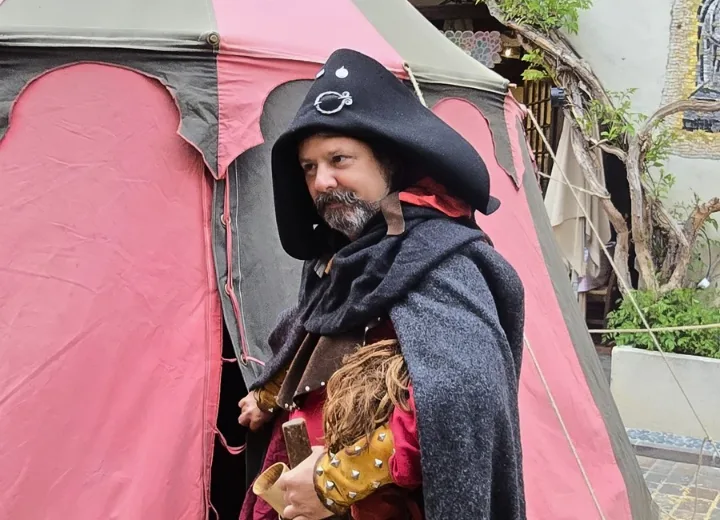
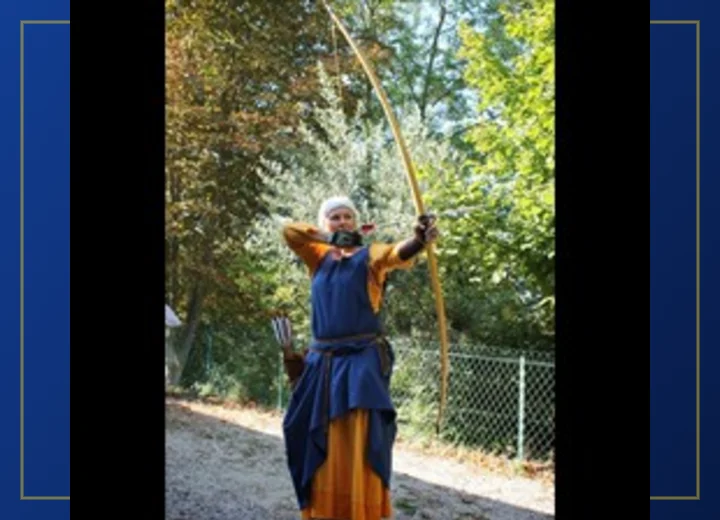

Reconstitution historique
La vie de camp d'une mesnie du 13ème au 15ème siècle
Un camp installé, habité et animé du matin au soir : cuisine au feu, artisanat, héraldique, armes, échanges avec le public. Nous participons aux fêtes médiévales et aux reconstitutions dans les châteaux, les villages anciens et les cadres champêtres, dans la vallée du Rhône et le sud de la France.
- Camp
- installé et animé
- Public
- familles et visiteurs
- Zone
- vallée du Rhône et sud de la France

Voir, toucher, comprendre
Le camp n’est pas un simple décor. Il est habité : on y cuisine, on y travaille, on y explique les objets, les gestes et les usages. Le public observe, questionne et participe.
Des modules courts, lisibles, interconnectés
Chaque animation se combine aux autres dans le campement ; certaines peuvent aussi être proposées seules. Nous sommes tous bénévoles, chacun avec sa spécialité : les animations présentées dépendent des membres présents le jour de l’événement.

Cuisine au feu
Feu, ustensiles, recettes, gestes quotidiens et arts de la table.
Autour du foyer, le public découvre comment on préparait et partageait les repas au Moyen Âge. Les explications portent sur l’allumage et l’entretien du feu, les ustensiles, les modes de cuisson, les ingrédients disponibles et l’organisation quotidienne du camp.
La présentation permet aussi d’aborder les différences sociales, la conservation des aliments et les arts de la table. Les échanges s’adaptent à l’âge du public et aux objets effectivement présentés le jour de l’animation.
Points abordés
- Foyer, chaudrons et ustensiles
- Recettes et ingrédients historiques
- Gestes quotidiens et service de table

Héraldique
Couleurs, meubles, blasons et atelier très visuel pour le public.
L’héraldique est présentée comme un langage visuel construit pour identifier une personne, une famille ou une communauté. Le public apprend à reconnaître les couleurs, les partitions et les figures qui composent un blason.
Selon le contexte, l’animation peut prendre la forme d’une démonstration, d’un échange autour des bannières ou d’un petit exercice de composition. Elle fonctionne particulièrement bien avec les enfants et les groupes scolaires.
Points abordés
- Vocabulaire et règles de composition
- Lecture de blasons et de bannières
- Création guidée d’armoiries

Armes et armures
L’équipement du combattant, à toucher et à essayer, du Moyen Âge à la Renaissance.
Cette présentation replace les armes et les protections dans leur contexte historique. Formes, matériaux, poids, entretien et évolution sont expliqués à partir de reproductions manipulées par les membres de l’association.
L’objectif n’est pas le spectacle de combat, mais la compréhension du matériel et des gestes. La démonstration reste encadrée et adaptée à l’espace disponible ainsi qu’au public présent.
Points abordés
- Équipement du combattant
- Fabrication, entretien et évolution
- Démonstrations commentées et sécurisées

Textile et tissage
Une animation calme, pédagogique et très adaptée aux familles.
De la fibre au vêtement, cette animation montre les nombreuses étapes nécessaires avant de pouvoir se vêtir. Le public observe les matières, les outils et les gestes liés au filage, au tissage et aux finitions.
Le module invite naturellement aux questions et à l’observation rapprochée. Il peut compléter une présentation du costume, des couleurs ou de la place du travail textile dans la vie quotidienne.
Points abordés
- Fibres, fils et teintures
- Outils et techniques de tissage
- Vêtements et usages selon les époques

Écriture et pigments
Calligraphie, supports, couleurs et petits objets de camp.
Le public découvre les supports de l’écrit, les outils du scribe et la préparation des couleurs. La démonstration permet de comprendre la lenteur du geste, le coût des matériaux et la valeur accordée aux documents.
Des exemples de lettres, de décors et de pigments rendent le sujet concret. Le contenu peut être orienté vers la calligraphie, l’enluminure ou les usages de l’écrit selon le lieu et le temps disponible.
Points abordés
- Plumes, encres et supports
- Fabrication et usage des pigments
- Calligraphie et décor des manuscrits

Vie de camp
Tentes, mobilier, tables, costumes et interactions continues.
La vie de camp relie tous les autres modules. Tentes, mobilier, vêtements, repas et activités composent un espace habité dans lequel le public peut circuler et échanger avec les membres de la mesnie.
Plutôt qu’un décor figé, le camp évolue au fil de la journée : préparation des repas, entretien du matériel, artisanat et présentations ponctuelles. Cette présence continue crée un point d’attraction visible dans l’événement.
Points abordés
- Installation et organisation du camp
- Mobilier, costumes et objets quotidiens
- Échanges continus avec les visiteurs

Bourreau
Justice médiévale, métier du bourreau, croyances et idées reçues.
À travers le personnage du bourreau, cette animation aborde la justice au Moyen Âge, ses acteurs et les peines prononcées. Le public découvre un métier à part, entouré de nombreuses croyances et souvent très différent de l’image transmise par les films.
La présentation privilégie l’histoire, les objets et les échanges avec le public, sans mise en scène complaisante. Le discours est adapté à l’âge des visiteurs et au cadre de l’événement.
Points abordés
- Justice et peines au Moyen Âge
- Statut et quotidien du bourreau
- Mythes, croyances et réalité historique

Lessive à la cendre
Une démonstration concrète des techniques d’entretien du linge.
Cette animation explique comment les propriétés de la cendre étaient utilisées pour laver le linge. Les différentes étapes sont présentées depuis la préparation de la lessive jusqu’au rinçage, avec les récipients et les gestes associés.
Le sujet permet d’aborder l’hygiène, l’organisation domestique, la consommation d’eau et le travail nécessaire à l’entretien des textiles avant les produits modernes.
Points abordés
- Préparation de la lessive de cendre
- Lavage, rinçage et séchage du linge
- Hygiène et tâches domestiques
Médecine
Remèdes, plantes et idées reçues sur la médecine du Moyen Âge.
Sur le camp, on soigne comme au Moyen Âge : plantes, onguents et remèdes de la maison, avec les objets et les gestes qui vont avec. Le public découvre ce que l’on savait, ce que l’on croyait, et ce qui a survécu jusqu’à nous.
Le module se prête aux échanges avec les familles et corrige quelques idées reçues sur l’hygiène et les soins médiévaux.
Points abordés
- Plantes, remèdes et soins du quotidien
- Savoirs et croyances de l’époque
- Idées reçues sur la médecine médiévale

Jeux de société
Découverte de jeux historiques simples, rapides et participatifs.
Des jeux de plateau, de stratégie ou d’adresse permettent aux visiteurs de s’installer quelques minutes et de partager une activité accessible. Les règles sont expliquées par un membre de l’association avant de laisser place à la partie.
Ce module calme et participatif convient particulièrement aux familles. Il peut fonctionner en continu sur le camp ou prendre la forme de petits défis organisés pendant la journée.
Points abordés
- Présentation des jeux et de leurs règles
- Parties guidées pour petits et grands
- Stratégie, hasard et sociabilité

Initiation à l’escrime historique
Enfants et adultes découvrent les rudiments de l’épée, en toute sécurité.
Le public s’initie à l’art du combat tel que le décrivent les traités des maîtres d’armes : épée longue, dague, épée et bocle, combat en groupe avec bouclier. Une approche ludique et concrète, avec du matériel adapté et un encadrement permanent.
L’initiation se fait en passages courts, pour que plusieurs groupes participent au fil de la journée, enfants comme adultes. Plusieurs membres de l’association pratiquent les arts martiaux historiques européens.
Points abordés
- Consignes et gestes de base
- Épée longue, dague, épée et bocle, bouclier
- Petits groupes, matériel adapté à l’âge

Duel judiciaire
Un vrai duel à la touche, dans une lice fermée, avec les règles de l’époque.
Ce n’est pas de l’escrime de spectacle : les combattants s’affrontent à la touche, dans une lice fermée et sécurisée, selon des règles qui existaient aux XIVe et XVe siècles. Un maréchal arbitre et explique au public le contexte : pourquoi un combat pouvait rendre la justice, chez les nobles comme dans le peuple.
Les équipements varient d’un duel à l’autre : doublet, cotte de mailles, brigandine, armure. Un temps fort rarement présenté dans les fêtes médiévales, dont l’heure et la durée se calent sur votre programme.
Points abordés
- Contexte juridique et règles du duel
- Duel armuré et duel civil : ce qui change
- Combat à la touche, arbitré et commenté
Les enfants en lice
Épées en mousse et boucliers : les enfants combattent à leur tour, dans la lice.
Entre deux passages d’adultes, la lice revient aux enfants. Épées en mousse, boucliers à leur taille : le matériel est prévu pour eux, et un membre de l’association arbitre chaque combat du début à la fin.
Les règles sont celles des grands, expliquées avant d’entrer : le salut, la garde, la touche. Les passages sont courts pour que tout le monde y vienne au fil de la journée, et les parents suivent depuis le bord de la lice.
Points abordés
- Salut, garde et touche, comme chez les grands
- Épées en mousse et boucliers adaptés à la taille
- Passages courts et arbitrés, plusieurs fois dans la journée

Archerie
L’arc, les flèches et la puissance d’une arme simple en apparence.
De l’arc à double courbure au long bow anglais, l’animation compare les matériaux, les formes et les usages, et explique pourquoi tant d’armées ont plié face aux archers. Le public découvre les différents types de flèches : pour chasser, percer une armure, ralentir un navire ou incendier un engin de siège.
Selon le lieu et l’espace disponible, la présentation se prolonge par des tirs sur cible commentés par nos archers.
Points abordés
- Arcs et flèches : matériaux, formes, usages
- La place de l’archer dans les batailles
- Tirs sur cible commentés, selon le lieu

Forge
Le travail du métal, les outils du forgeron et la fabrication des objets.
Cette animation présente le métier du forgeron et les principales étapes nécessaires pour transformer le métal. Le public découvre le rôle du foyer, de l’enclume, du marteau et des différents outils utilisés pour chauffer, façonner et finir une pièce.
La démonstration permet d’évoquer la place essentielle de la forge dans la vie quotidienne : outils agricoles, éléments de construction, objets domestiques et équipement militaire. Son déroulement est adapté au lieu et aux conditions de sécurité de l’événement.
Points abordés
- Foyer, soufflet, enclume et marteaux
- Chauffe et mise en forme du métal
- Objets produits et rôle du forgeron
Cotte de mailles
Anneau après anneau : le public voit naître une protection et la soupèse.
La cotte de mailles se fabrique anneau par anneau, à la pince, pendant des heures. L’atelier montre le geste, les outils et les motifs d’assemblage, et laisse le public essayer quelques anneaux.
On y parle aussi du poids, du coût et de l’entretien de cette protection, et de ce qu’elle arrête ou n’arrête pas.
Points abordés
- Outils et geste du mailleur
- Motifs d’assemblage et solidité
- Poids, coût et entretien
Taille de pierre
Les outils et les gestes du tailleur de pierre, à voir de près.
Le tailleur de pierre travaille au camp, au ciseau et à la massette : le public suit l’avancement d’une pièce au fil de la journée et découvre les outils, les traces qu’ils laissent et les marques des tailleurs.
La démonstration fait le lien avec les monuments du lieu quand le site s’y prête : églises, remparts, châteaux.
Points abordés
- Outils et traces d’outils
- Du bloc brut à la pièce finie
- Marques de tailleurs et chantiers médiévaux

Fruits et légumes
Produits disponibles, saisonnalité et alimentation au Moyen Âge.
Cette animation invite le public à découvrir les fruits et légumes connus et consommés au Moyen Âge. Elle permet de distinguer les produits locaux, les aliments réservés à certaines régions ou catégories sociales, et ceux qui n’arriveront en Europe que plus tard.
La présentation aborde également la saisonnalité, les modes de conservation et la place des végétaux dans les repas. Elle offre un point de comparaison concret avec notre alimentation actuelle et se prête particulièrement bien aux échanges avec les familles et les scolaires.
Points abordés
- Fruits et légumes présents au Moyen Âge
- Saisons, cultures et conservation
- Idées reçues sur l’alimentation médiévale
Défilé en costumes
La mesnie défile avec sa bannière, aux côtés des autres troupes.
Pour ouvrir ou clore une fête médiévale, la mesnie défile en costumes, bannière en tête, avec les autres troupes présentes. Un moment visible qui annonce le camp aux visiteurs.
Le défilé se cale sur votre programme ; il est inclus dans nos interventions sur un week-end.
Points abordés
- Cortège en costumes avec la bannière
- Ouverture ou clôture de la fête
- Placé à l’heure de votre programme
Des personnages hauts en couleur
Plusieurs familles, une mesnie. Chacun tient un rôle, et le public s’adresse à lui comme à un habitant du camp.

Alpes-Maritimes · association loi 1901
Une mesnie de passionnés, un décor vivant
Pour les organisateurs de fêtes médiévales et de sites historiques
Un campement vivant, à sa place dans votre événement.
Fête médiévale, journées du patrimoine, reconstitution dans un château ou un village ancien : vous fixez la date, le lieu et la durée, nous arrivons avec le camp, le matériel et les personnages. Association loi 1901, nous intervenons dans la vallée du Rhône et le sud de la France.
- Le lieu d’abord. Le camp s’installe en herbe ou en terre, dans un cadre historique ou champêtre : c’est ce qui rend l’immersion crédible, pour le public comme pour nous.
- Logistique. Nous apportons tentes, mobilier, matériel et costumes ; vous prévoyez l’emplacement, un point d’eau et du bois pour la cuisine.
- Public. Familles, visiteurs de fêtes et de sites patrimoniaux, passionnés : le discours s’adapte à qui s’arrête.
- Formats. Journée ou week-end au sein de votre programmation ; ponctuellement, un atelier pour une classe ou une médiathèque.
- Pédagogie. On explique les objets et les gestes, on fait toucher, on répond aux questions : la transmission plutôt que le spectacle en boucle.
Journée
Le camp installé dès le matin, ou la veille. Les ateliers tournent en continu de 10 h à 18 h ; un ou deux temps forts — duel judiciaire, initiation à l’escrime — se placent à l’heure de votre programme.
Week-end
Une partie du camp s’installe la veille ; animations samedi et dimanche de 10 h à 18 h, défilé avec les troupes si votre programme en prévoit un. Nous vivons sur le camp : nous y dormons, cuisinons et mangeons.
Ponctuel
Exceptionnellement, un ou deux ateliers sans campement, pour une classe, une médiathèque ou une journée du patrimoine.
En pratique
Vous prévoyez
- un terrain en herbe ou en terre d’environ 200 m² pour le camp, plus 50 m² pour la lice de combat ;
- un point d’eau à moins de 100 m et un demi-stère de bois pour la cuisine ;
- une quinzaine de bottes de paille pour délimiter le camp et la lice (nous avons piquets et cordages) ;
- des sanitaires à proximité et, sur un week-end, une surveillance du camp la nuit.
Nous apportons trois à cinq tentes, l’auvent cuisine avec ses chaudrons et sa table à feu, le râtelier d’armes, le matériel des ateliers et les costumes. De six à quatorze membres selon la date ; nos repas et notre transport sont compris. Devis sur demande.
Galerie photo
Parlez-nous de votre événement.
Date, lieu et nature du site, public attendu, espace disponible, durée : avec ces cinq éléments, nous vous répondons avec une proposition et un devis.